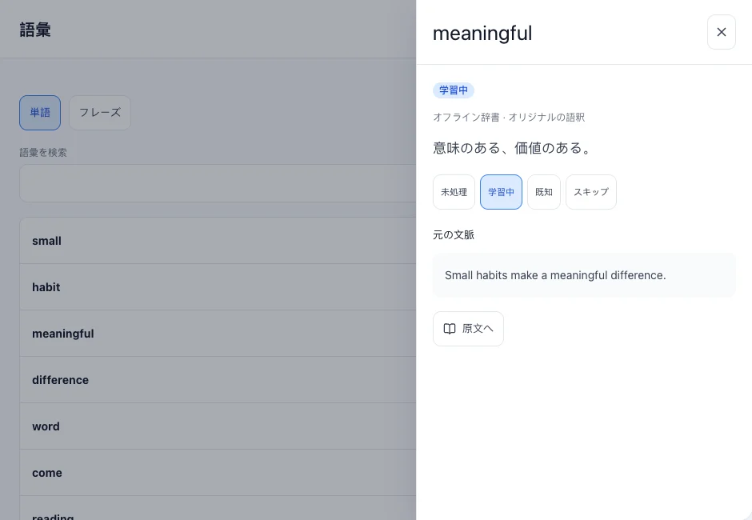
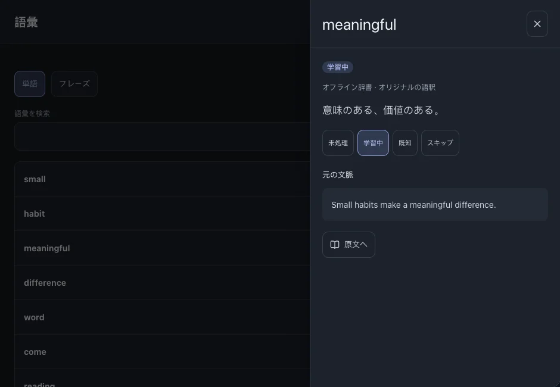

単語とフレーズ
字幕から集めた単語とフレーズを整理します。出典から元の文に戻れます。
このページの目次
項目を探す
- 単語一覧を開き、単語またはフレーズを選びます。
- 検索語を入力するか、学習状態で絞り込みます。見つからない場合は学習言語も確認してください。



学習状態を変える
- 項目を開いて状態を選びます。複数を変更する場合は一覧の選択機能を使います。
- 「学習中」の語は復習対象となり、予定に従って出題されます。
関連する操作復習
元の文に戻る
- 項目の出典や出現箇所を開きます。
- ファイルと文を選び、該当箇所から読み続けます。